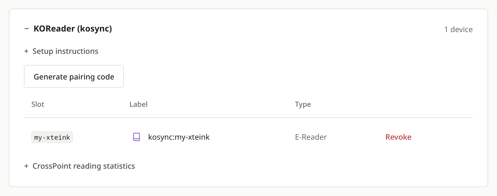
The pairing code
Typed as the password in CrossPoint Sync, and again to download the statistics plugin. After pairing it stays the reader's sync password, and the website cannot show it again.
Pair the reader with your account and it keeps your place in step with your other devices. Add your library and you can download books straight onto it. Add the statistics plugin and your reading time shows up on the website.
StartPosition sync takes a few minutes. The library and the statistics are optional and can be added later.
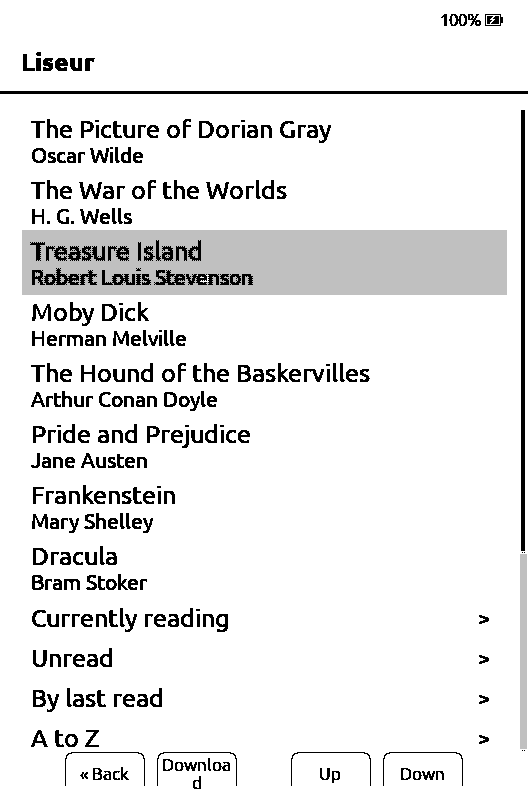
On your computer, sign into liseur-sync and open Settings, then Devices & integrations. In the KOReader (kosync) box, press Generate pairing code. CrossPoint syncs the same way KOReader does, so it uses the same box.
The code is shown once. Save it in your password manager under the name you will give the reader, because it becomes the reader's sync password and you need it again in step 4.
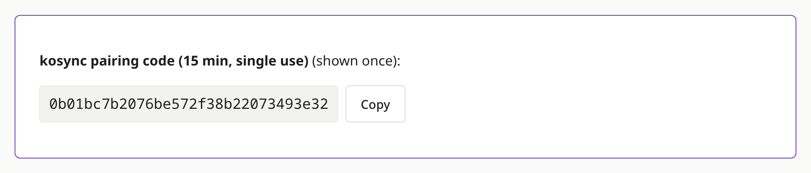
On the reader, open Settings, go to the Connectivity tab and choose CrossPoint Sync. Fill in:
| Username | A name for this reader, such as my-xteink |
|---|---|
| Password | The pairing code |
| Sync Server URL | Your server's address followed by /adapter/kosync, for example https://books.example.com/adapter/kosync |
| Server Type | KoSync |
| Document Matching | Binary |
Then choose Sign Up. The reader says Account created, which here means it is now attached to your existing account on the website.
Choose Binary even when Filename is the default. It lets the server recognise the same book on all your devices. Leave Sync Clippings off.
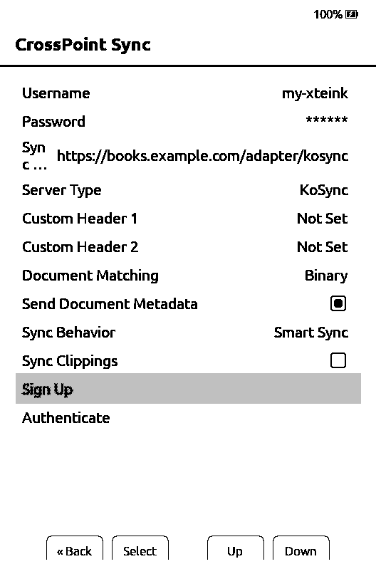
This step is optional. It lets you download books from your server onto the reader, and those copies match the books on the website for syncing and statistics.
On the website, open the Apps tab of Devices & integrations. Under API tokens, type a name such as Xteink library, leave only library-read ticked and press New token. Copy the secret it shows.
On the reader, open Settings, then Connectivity, then OPDS Servers, and add a server:
| OPDS Server URL | Your server's address followed by /opds/v1.2 |
|---|---|
| Username | The word token |
| Password | The token secret |
Your books are then under OPDS Browser on the home screen. Once plugins are turned on in step 5, it moves into Plugins. Pick a book and choose Download.
Leave downloaded books as they are. Converting or optimising an EPUB can make the server treat it as a different book.
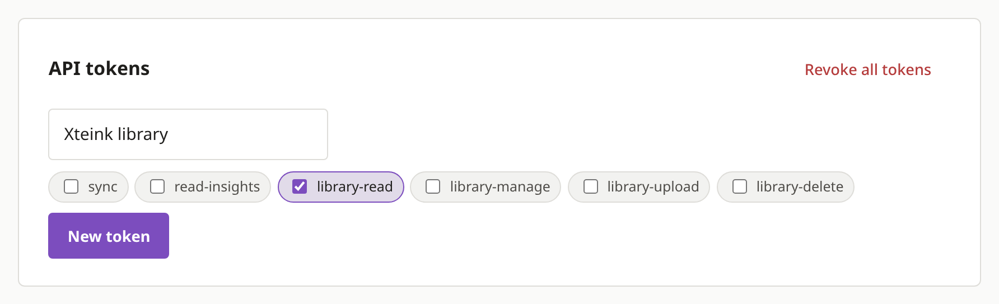
The plugin sends how long you read to the Insights page. It needs CrossPoint firmware that reports reading sessions, which its documentation calls reader.session. A Plugins menu alone does not prove that, so check your firmware's release notes.
Back on the E-readers tab, open your reader's entry under KOReader (kosync) and expand CrossPoint reading statistics. Type the pairing code from step 1 and press Enable statistics & download plugin. You get liseur-stats.zip.
From now on this reader's reading time comes only from the plugin, so install it straight away. The ZIP holds a login for your reader. Keep it private.
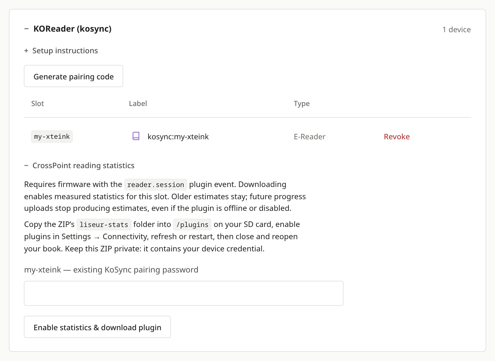
Unzip the file on your computer. Copy the liseur-stats folder into a folder called plugins at the top of the reader's storage, creating plugins if it is missing. Make sure device.json sits directly inside plugins/liseur-stats.
You can copy it over Wi-Fi: start File Transfer on the reader, open the address it shows in your computer's browser and use its file manager. Or switch the reader off, take out the SD card and copy the folder with a card reader.
Then, on the reader, open Settings, Connectivity, Plugins and choose Enabled. Restart the reader, check that Liseur reading statistics is listed under Plugins on the home screen, and reopen your book.
/
└── plugins/
└── liseur-stats/
├── device.json
├── config.json
└── README.txt
These screenshots come from the CrossPoint simulator running firmware 2.0.0, set up with the steps above against a real liseur-sync server. Your books will differ.
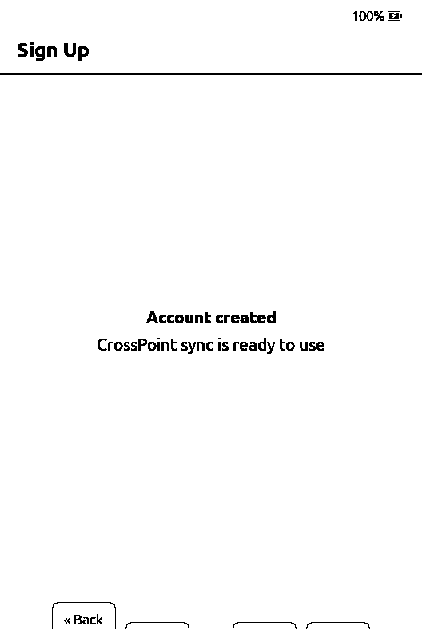
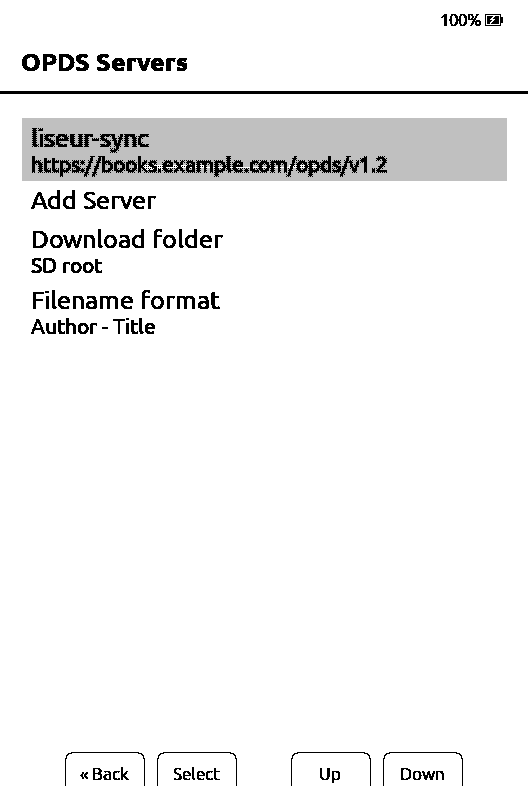
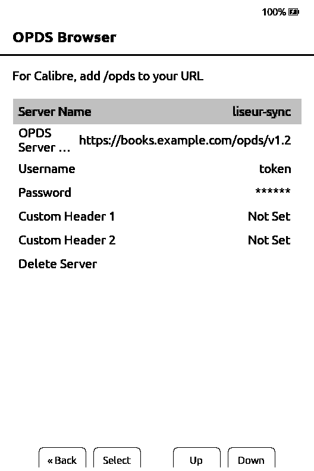
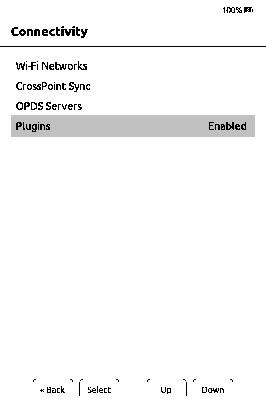
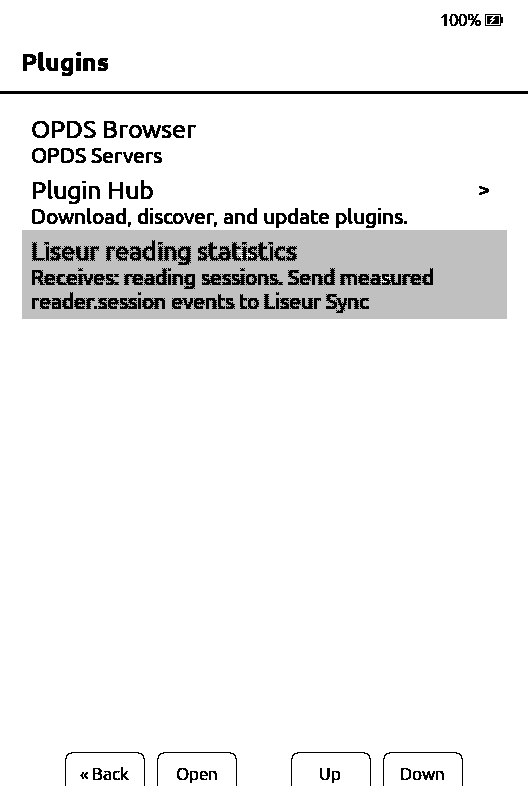
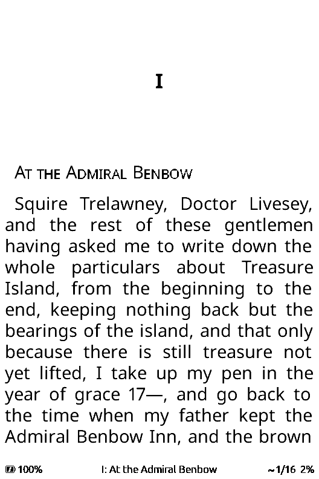
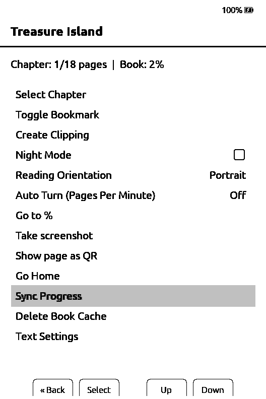
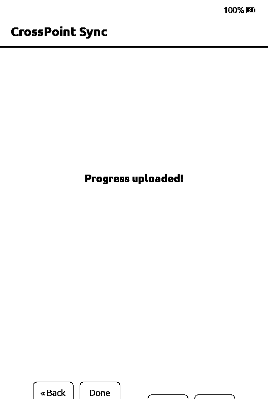
Your account password only signs you into the website. The reader uses two other logins, and each can be revoked on its own.

Typed as the password in CrossPoint Sync, and again to download the statistics plugin. After pairing it stays the reader's sync password, and the website cannot show it again.
Typed as the password in OPDS Servers, with token as the username. It can list and download your books and nothing else.
That name is already paired. Pick another name and use a fresh pairing code. A revoked name cannot be registered again.
Use the pairing code you typed on the reader for that same name, and check you expanded the right reader. Your account password and your library token do not work here. If the code is lost, follow the next answer.
Generate a new code and save it. On the reader, open CrossPoint Sync, change Username to a new name such as my-xteink-new, put the new code in Password and choose Sign Up. Download the plugin for the new name with the same code and copy it over the old files. Once it works, revoke the old name on the website. Your books, positions and statistics stay with your account.
CrossPoint shows this for refused logins as well as broken catalogs. Check that the address ends in /opds/v1.2, the username is token and the token has library-read and has not been revoked. If it still fails, ask whoever runs the server whether your account can see the folder holding your books.
Check that device.json is directly inside plugins/liseur-stats/. A ZIP left on the reader, or a second liseur-stats folder inside the first, will not load. Restart the reader after enabling plugins. If it is still missing, your firmware may not support plugins or reader.session.
Close and reopen the book after installing the plugin, since a session that started earlier is ignored. Read for a few minutes turning pages forward, spending at least a couple of seconds on each, then close the book or put the reader to sleep with Wi-Fi in reach. Backward turns and chapter jumps don't count, and a session under ten seconds is not sent.
Offline reading is kept in a small queue and sent later. A very long time offline can fill it and lose the oldest records, and the server does not guess the missing time.
Set Document Matching to Binary in CrossPoint Sync, and read the EPUB exactly as it came from the server. A converted or optimised copy looks like a different book.
The sync address still starts at the top of the host: https://example.com/adapter/kosync. Whoever runs the server has to pass that path through the proxy as it is. The deployment guide covers it.